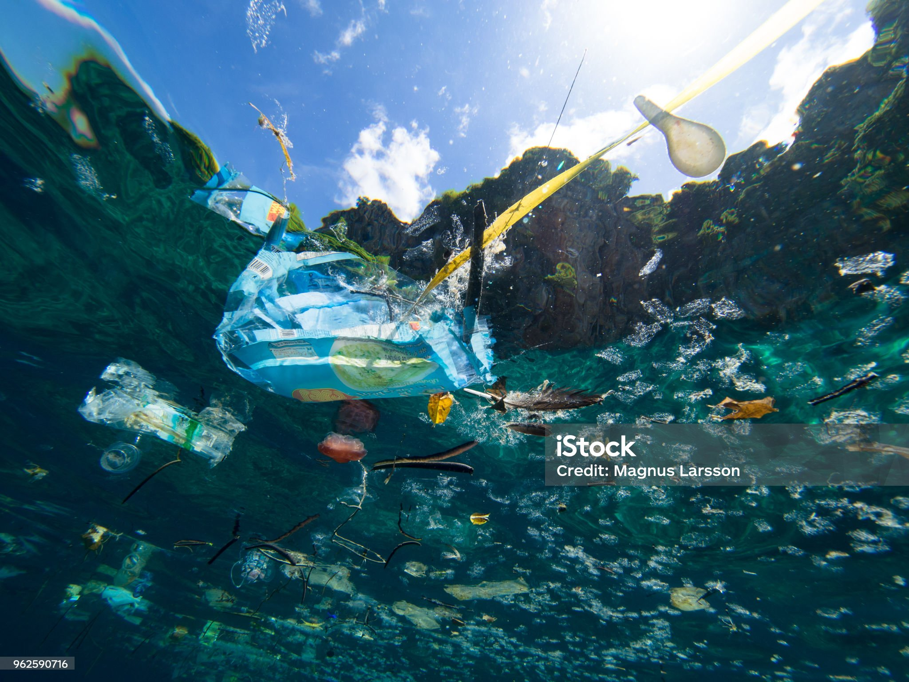
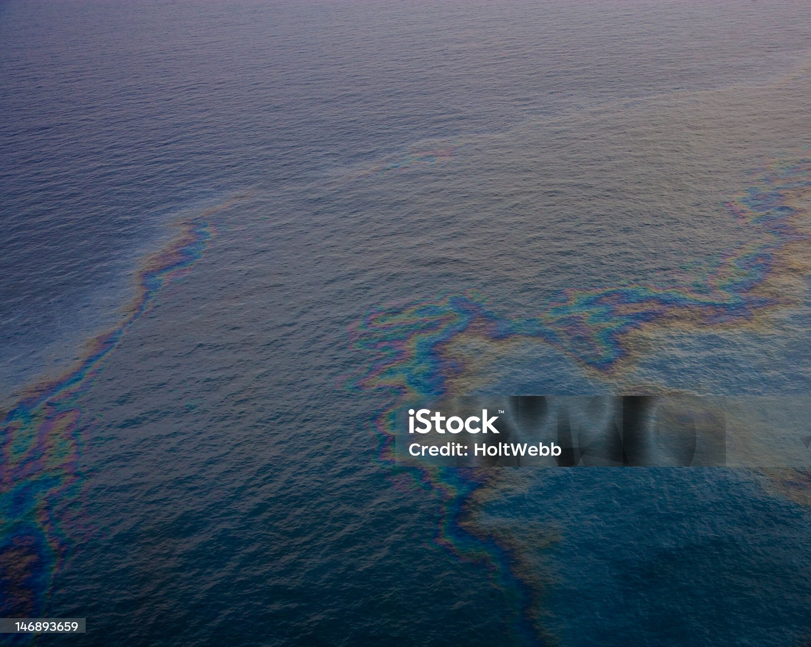
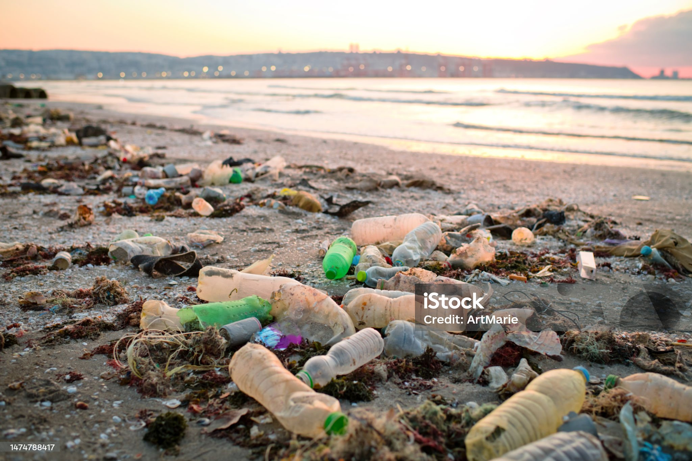

Ocean Pollution: A Growing Crisis
Our oceans are drowning in pollution. Every year, millions of tons of waste enter the marine environment, threatening marine life, human health, and the future of our planet. Ocean pollution is one of the most pressing environmental challenges of our time, and it requires immediate action from all of us.
Types of Ocean Pollution
Plastic Pollution
Plastic is the most common type of marine debris. From plastic bags to microbeads, plastic never fully decomposes. Instead, it breaks down into smaller pieces called microplastics. Over 8 million metric tons of plastic enter the ocean each year - that's equivalent to dumping a garbage truck full of plastic into the ocean every minute.
Chemical Pollution
Industrial chemicals, pesticides, fertilizers, and oil spills contaminate ocean waters. These toxic substances can poison marine life and accumulate in the food chain. Agricultural runoff containing fertilizers creates dead zones where oxygen levels are too low for most marine life to survive.
Noise Pollution
Underwater noise from shipping vessels, sonar, and offshore drilling disrupts marine animals' ability to communicate, navigate, and find food. Whales and dolphins, which rely on echolocation, are particularly affected by noise pollution.
Thermal Pollution
Industrial facilities often use ocean water for cooling and release heated water back into the ocean. This temperature change can harm marine ecosystems that are sensitive to temperature fluctuations.



Impacts of Ocean Pollution
Marine animals killed by plastic annually
Of sea turtle species have ingested plastic
Of coral reefs have been lost
Marine Life Deaths:
Over 1 million marine animals die each year due to plastic pollution. Sea turtles mistake plastic bags for jellyfish, whales and dolphins become entangled in fishing nets, and seabirds feed plastic to their chicks. Microplastics have been found in 100% of sea turtle species and in over 50% of fish species consumed by humans.
Human Health Risks:
When we eat seafood, we also consume the pollutants that have accumulated in marine life. Microplastics and toxic chemicals enter our food chain through fish and shellfish. Studies have found microplastics in human blood, lungs, and even placentas.
Economic Impact:
Ocean pollution costs the global economy billions of dollars annually. Coastal tourism suffers when beaches are covered in debris, fishing industries decline when fish populations are affected, and cleanup efforts require massive resources.
The Great Pacific Garbage Patch is a collection of marine debris in the North Pacific Ocean. It's estimated to be twice the size of Texas and contains over 1.8 trillion pieces of plastic.
Solutions to Ocean Pollution
What Individuals Can Do:
- Reduce single-use plastics: Use reusable bags, bottles, and straws
- Properly dispose of waste: Recycle and never litter
- Choose sustainable products: Avoid microbeads in cosmetics
- Join cleanup events: Participate in beach and river cleanups
- Spread awareness: Educate others about ocean pollution
What Governments and Organizations Can Do:
- Ban single-use plastics: Implement policies to reduce plastic production
- Improve waste management: Build better recycling infrastructure
- Enforce regulations: Penalize illegal dumping and industrial pollution
- Support cleanup technologies: Invest in ocean cleanup initiatives
- Protect marine areas: Establish marine protected areas
What BlueFuture Is Doing:
Our team is committed to raising awareness about ocean pollution through this website. We're learning how technology can help spread environmental messages and inspire action. Each of us is taking personal steps to reduce our plastic consumption:
- Using reusable water bottles and coffee cups
- Bringing reusable bags when shopping
- Choosing products with minimal packaging
- Educating friends and family about ocean pollution